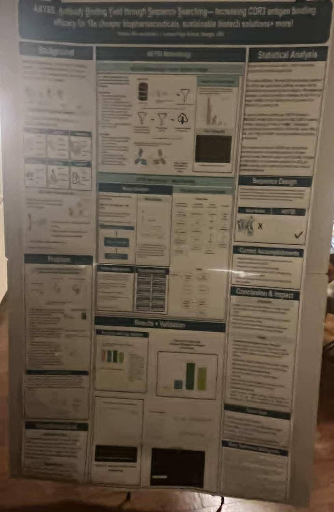
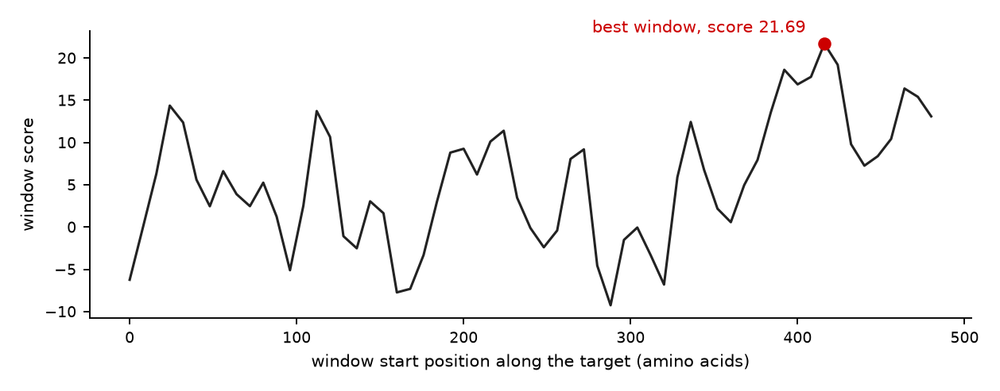

andrew kim / projects / cdr3
a science fair project about antibody design, called abyss, built with daniel li. an antibody grabs its target through a short loop called cdr3, and which target it grabs depends mostly on that loop's sequence, so if you can score a loop against a target you can then go looking for loops that bind it better
the data is about a thousand real antibody and target pairs pulled out of solved protein structures, plus the same proteins shuffled into pairs that don't go together so there's something to tell apart. both sequences go through esm-2, a protein language model that turns amino acids into vectors. it won a $2000 grant, and we presented it to representative rich mccormick.

averaging buried the signal
my first model averaged each protein down into a single vector and pushed the target and the loop through a small network together. 0.55 auc, where 0.5 is a coin flip. that is barely better than nothing, so before i touched the model i went looking for the opposite problem, which is whether it was cheating. i trained one model on the target alone, trained another on the loop alone, and split the data so that no target protein ever appears in both the training and the testing half.
auc
whole target, averaged 0.55
+ interaction features 0.59
16-aa windows, best one 0.62
target alone 0.50
loop alone 0.47both controls land on guessing. neither sequence gives the answer away by itself, so there is no shortcut sitting in the data, and whatever the pair model knows has to be coming from the pair. the data was fine. the averaging was the problem. a target runs about 200 amino acids and an antibody only touches a handful of them, so flattening the whole protein into one vector buries the part that matters under everything that doesn't.
scoring patches instead of whole proteins
so i stopped averaging. the target gets cut into overlapping 16-amino-acid windows, every window is scored against the loop on its own, and the pair's score is just the best window. the model never has to form an opinion about the whole protein (ha stupid), it only has to find one patch that fits, and that is the same shape as the actual biology, where binding happens at a single site.

class Binder(nn.Module):
def __init__(self, dim, hidden=128, dropout=0.3):
super().__init__()
self.window_proj = nn.Sequential(nn.Linear(dim, hidden), nn.ReLU())
self.cdr3_proj = nn.Sequential(nn.Linear(dim, hidden), nn.ReLU())
self.score = nn.Sequential(
nn.Linear(4 * hidden, hidden), nn.ReLU(), nn.Dropout(dropout), nn.Linear(hidden, 1)
)
def forward(self, window_batch, mask, cdr3_batch):
w = self.window_proj(window_batch)
c = self.cdr3_proj(cdr3_batch).unsqueeze(1).expand(-1, w.shape[1], -1)
pair = torch.cat([w, c, w * c, (w - c).abs()], -1)
per_window = self.score(pair).squeeze(-1).masked_fill(~mask, -1e9)
return per_window.max(1).valuesthat took it to 0.62. every number on this page is five-fold cross validation repeated over three seeds, grouped so that no target is ever on both sides of a split.
searching for a better loop
once something can score a pair you can go hunting for a good one. it starts from a real loop, mutates one amino acid at a time while keeping the cysteine that every cdr3 opens with, scores every candidate in the pool against the target, and keeps the best twenty. a few hundred rounds of that is a beam search over sequence space.
def mutate(seq, k=1):
s = list(seq)
L = len(s)
for _ in range(k):
i = random.randrange(1, L)
s[i] = random.choice(AA)
s[0] = 'C'
return "".join(s)where it stands
0.62 is real and its kinda shaky and it kinda sucks. the search optimizes against the scorer, so it only finds a better binder if the scorer is right, and at 0.62 the scorer is right more often than not and that is about all you can say for it. a thousand pairs is not much to work with. the next thing i would try is the window idea pushed further, letting the model look at a few patches at once instead of only the single best one, since real binding sites are bigger than sixteen amino acids.
download the code (191 kb zip)